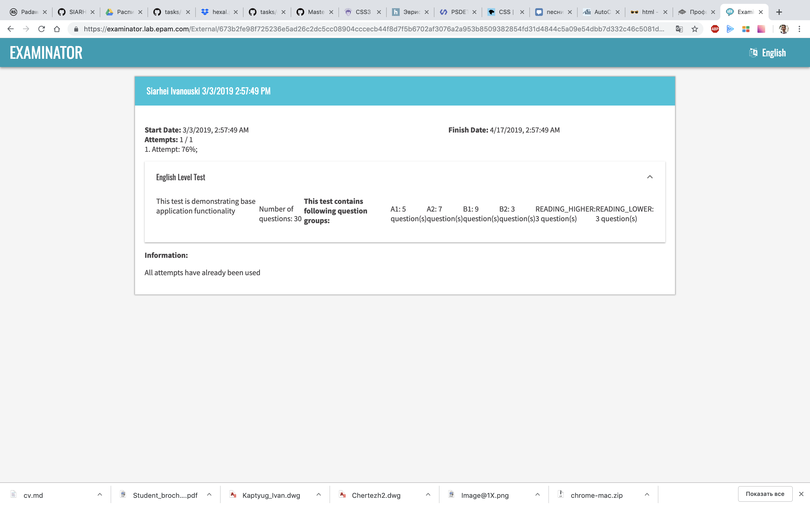
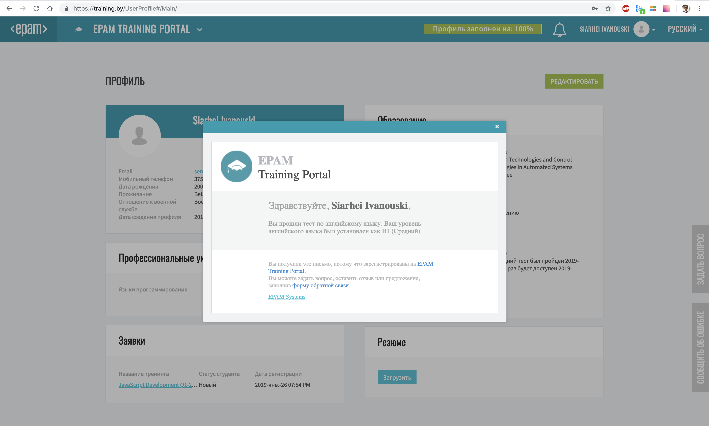

Curriculum Vitae
1. Sergey Ivanovsky
2. Contacts:
Cellphone: 8 (029) 534-35-14
Telegram: serezhishe
Discord: serheoddd #7705
3. Summary
I joined rsschool 2019-Q1 few months ago, and i was doing pretty well at the first stage. Second stage was a bit harder, and for personal reasons I had to stop studying. Nevertheless, now I'm ready to spend all my free time on coding and self-developing. I hope to pass on short track and later if I successed, want to find some front-end job.
4. Skills
- Understanding OOP, different data structures, sort and search algotithms.
- Some C/C++ knoowledge, based on University course, with such practice as laboratory works and self-education tasks.
- Medium javascript knowledge. RS school tasks as practice.
- Elementary git using.
7. Education - second-year student of Belorusian State University of Informatics and Radioelectronics (BSUIR) - Faculty of Information Technologies and Control
8. English level - Intermediate (B1)

